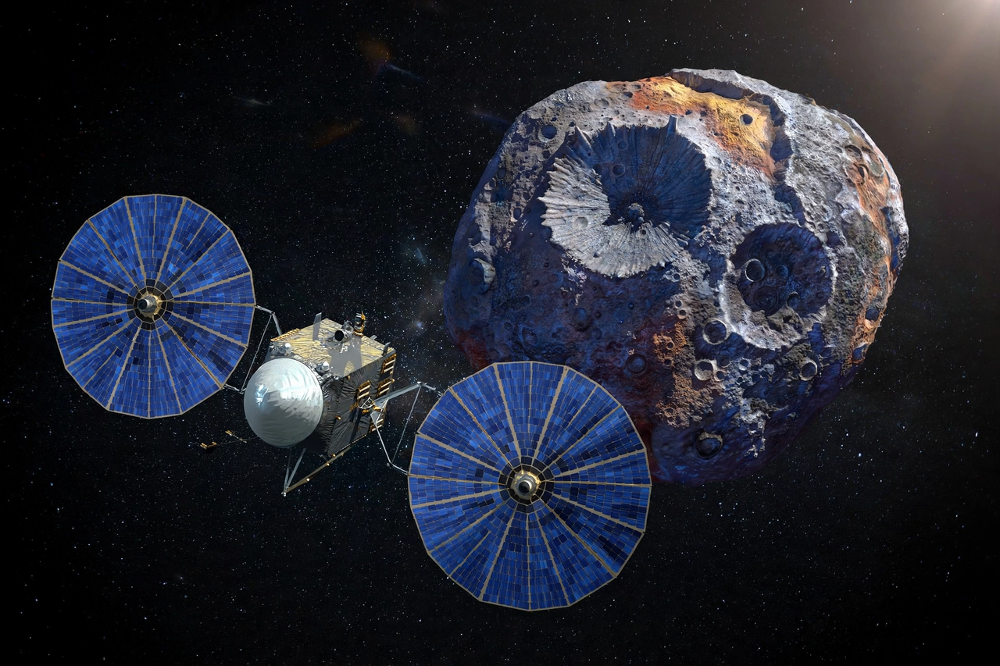

From Wikipedia, the free encyclopedia
| Psyche (spacecraft) | |
|---|---|
| Operator | NASA |
| Launch | 13 October 2023, Falcon Heavy |
| Target | Asteroid 16 Psyche (arrival planned 2029) |
| Propulsion | Solar-electric (Hall-effect thrusters) |

Psyche is a NASA Discovery Program mission launched in October 2023 to orbit the asteroid 16 Psyche in the main asteroid belt — the first mission to a metal-rich asteroid, which may be the exposed iron-nickel core of an early planet whose rocky mantle was stripped away.
The spacecraft uses solar-electric propulsion and a Mars gravity assist, and is planned to arrive in 2029 for a roughly two-year orbital survey of the asteroid's composition, topography, magnetic field and gravity. It also carries the Deep Space Optical Communications experiment, testing laser communications from deep space.